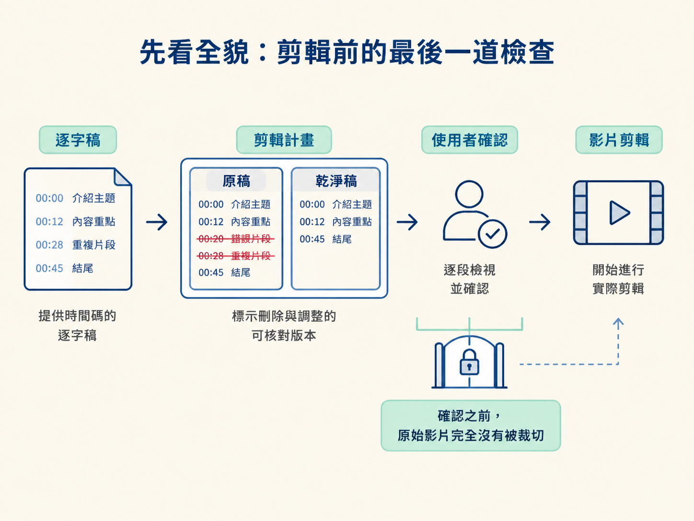
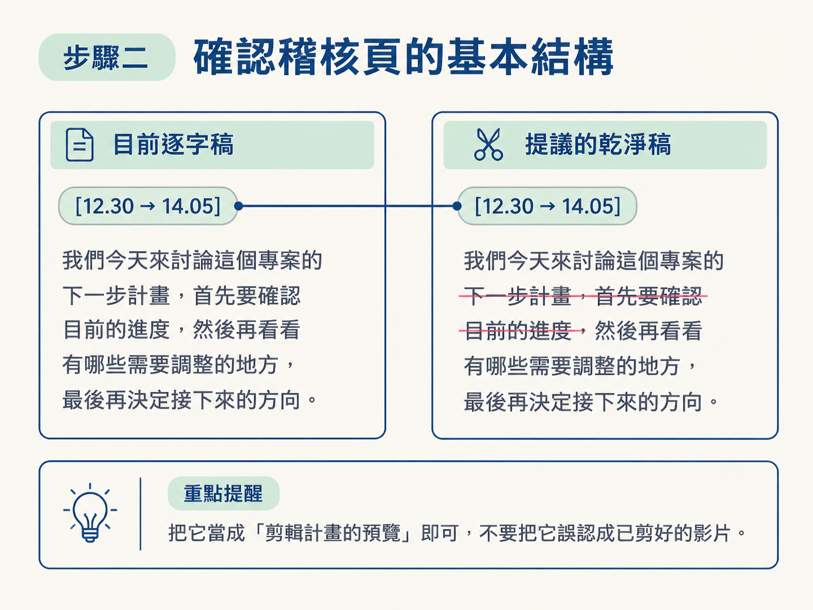
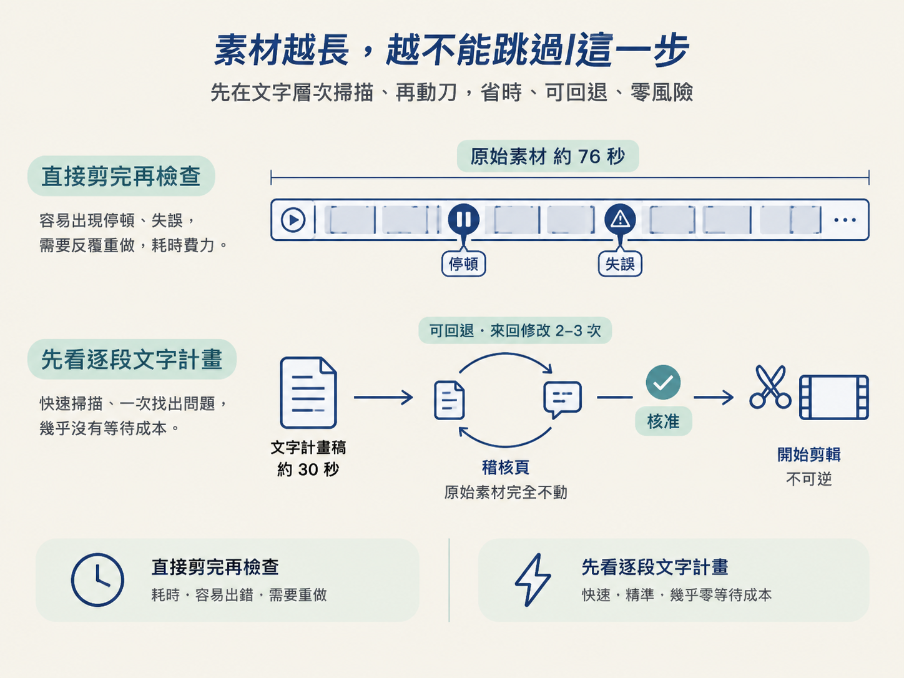

上一節完成後，你手上已經有一份帶有字級時間碼的逐字稿。接下來，會先把這份逐字稿整理成「提議的乾淨稿」，再交給你確認，最後才真正進入影片剪輯。
這個節點的目標，是產出一張「原稿 vs 乾淨稿」的並排稽核頁。左邊放完整逐字稿，右邊放預計保留的文字；被判斷要刪掉的內容，會用刪除線標示。你可以先在文字層次找出問題，不必等影片剪完才發現 agent 刪錯了句子。
動手前，你需要先具備上一節產出的逐字稿，以及一份能交給 agent 的剪輯規則。完成這一步後，你會得到一份可以讀、可以逐段核對的剪輯計畫；原始影片此時仍然完整，還沒有任何不可逆的裁切。

你要產出一張「原稿 vs 乾淨稿」的並排稽核頁，在真正剪片前確認完整、正確的保留文字。
這張頁面就像剪輯前的施工圖：先把要拆掉的牆標出來，確認沒有誤傷重要房間，才拿起剪刀動工。
如果只看最後的乾淨稿，你很難知道「少了什麼」，因為被刪掉的內容已經消失了。並排檢查則會保留兩個版本：
這也落實了 starter prompt 裡的規則：剪任何東西以前，先把打算保留的完整文字攤開給你看，等你讀過並同意。稽核頁就是這項規則的具體成果。它不需要算圖，也不需要等待影片渲染，卻能在動刀前攔下錯誤。
轉錄完成後，另外要求 agent 產出一份對照頁即可，不需要複雜的指令。下面這段指令可以直接調整：
edit my raw recording into a clean final cut ready for hyperframes.
- cut all the silences and the dead air out
- transcribe the audio so we can see word-level timestamps
- use the last take rule: if i say a phrase twice, keep the second one and cut the first
- build me an HTML page that shows the current script versus the proposed clean script side by side, with the mistakes crossed out and the kept parts marked
- before you cut, show me the full text you plan to keep so i can read it through and ok it
- only remove things. never reorder or rewrite what i said.這段指令的每一行，都在指定稽核頁必須具備的內容：
cut all the silences and the dead air out：指定要刪除停頓與冷場。word-level timestamps：要求逐字標出時間碼。last take rule：說明同一句重複時，要保留後一次的版本。current script versus the proposed clean script side by side：要求原稿與乾淨稿並排顯示。mistakes crossed out and the kept parts marked：指定刪除與保留內容的標記方式。一張最小可用的稽核頁，左欄放完整原稿，右欄放乾淨稿；要刪的文字則用刪除線標示：
<div class="audit">
<section class="col raw">
<h2>目前逐字稿</h2>
<p>[12.30 → 14.05] 我想示範重複的我我想示範三個步驟</p>
</section>
<section class="col clean">
<h2>提議的乾淨稿</h2>
<p>[12.30 → 14.05] <del>我想示範重複的</del> 我想示範三個步驟</p>
</section>
</div>這段只是結構示意，實際頁面會由 agent 根據你的素材產生。請確認同一段話在左右兩欄都有出現，差別只在於被判斷要丟掉的字是否加上刪除線。
把它當成「剪輯計畫的預覽」即可，不要把它誤認成已經剪好的影片。

拿到稽核頁後，不要只快速滑過去。照下面的順序檢查，通常幾分鐘就能完成：
先看刪除線的位置。被劃掉的內容，是否真的都是停頓、咳嗽或重講的失敗版本？如果有任何一句其實想保留，先在這裡提出來。
再讀右欄的乾淨稿。從頭念一遍，確認前後是否接得起來，有沒有被切到只剩半句的地方。字級時間碼可以幫你回頭對照原音。
特別檢查接點。兩段保留內容接在一起時，如果前一句的尾巴沒有收乾淨，剪出來可能會出現半個字或雜音。starter prompt 也要求 agent 逐一檢查接點，並把不確定的地方連同時間一起列出來。
最後確認它遵守「只刪，不重排、不改寫」的鐵律。乾淨稿裡的句子順序與用字，應該和原稿一致，只是少了被刪除的部分。
教學示範中的原始素材長約 76 秒，裡面有停頓與失誤；完成這道規劃後，乾淨稿只剩約 30 秒。但請注意，30 秒是剪輯計畫，不是已經輸出的成品。影片目前仍是完整原檔，只有在你按下同意、進入剪輯步驟後，內容才會真的被裁掉。
假設你錄了一小時的訪談或課程，裡面有大量重講與停頓。如果直接讓 agent 剪完再檢查，一旦它對某個段落的判斷和你不同，你就得回頭找出錯誤發生在哪個時間點，耗時又費力。
先看逐段文字計畫，則可以在文字層次快速掃描，一次指出所有問題，而且幾乎不需要等待成本。這樣做也留了退路：在核准之前，沒有任何不可逆的動作。就算你來回修改兩三次稽核頁，原始素材也完全不會被動到。

這一步完成時，你應該有一張可以直接打開檢查的 HTML 稽核頁：
並排稽核頁把完整原稿與提議的乾淨稿放在同一頁，讓你在剪輯前檢查刪除線、文字通順度、接點，以及「只刪不改」的規則。教學示範裡 76 秒的素材，計畫稿約剩 30 秒；但那只是計畫，影片要等你點頭後才真的被剪。
走到這裡，這個節點就完成了：你有一份可信的逐字稿，也有一份經過確認的乾淨稿計畫。下一個節點會接手這份計畫，使用 ffmpeg 真正剪掉靜音與 NG 重錄，輸出 HyperFrames 能精準對齊的乾淨影片。